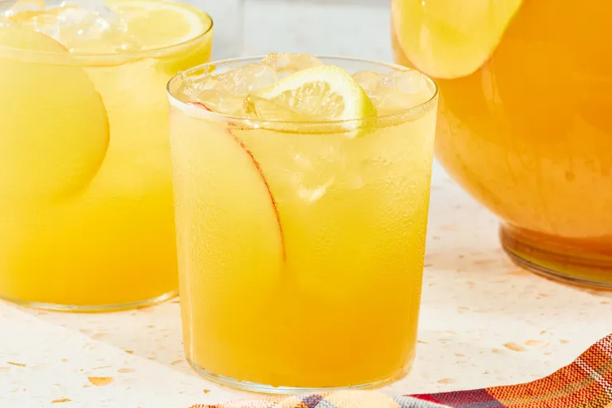

Honeycrisp Apple Lemonade

Description
This Honeycrisp apple lemonade is a fall twist on classic lemonade made with fresh apple and lemon juices sweetened with agave. Garnished with sliced apples and lemons, this easy pitcher drink is perfect for late-summer gatherings or fall get-togethers.
Ingredients
- 6 large Honeycrisp apples, cored and roughly chopped (skin on)
- 5 cups cold water, divided
- ice, as needed
- 1 Honeycrisp apple, thinly sliced into circles
- 1 lemon, thinly sliced into circles
- 1 cup freshly squeezed lemon juice (from about 6 to 8 lemons)
- 1 cup agave nectar, or to taste
Steps
- Combine chopped apples and 2 cups water in a blender. Blend until smooth, then strain through a fine-mesh strainer, pressing out as much juice as possible.
- Fill a 1-gallon pitcher about 1/4 to 1/3 full with ice. Add apple and lemon slices to the pitcher, arranging some along the sides of the glass.
- Pour in strained apple juice. Add lemon juice and sweeten with agave nectar to taste. Finish with 3 cups cold water. Stir everything together well and serve cold.
Home